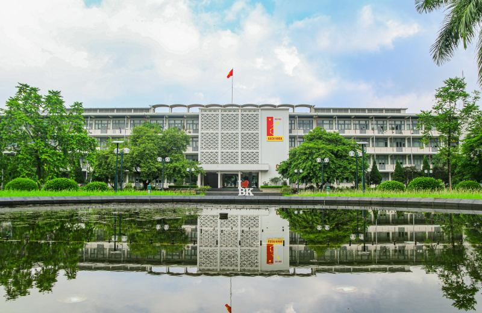
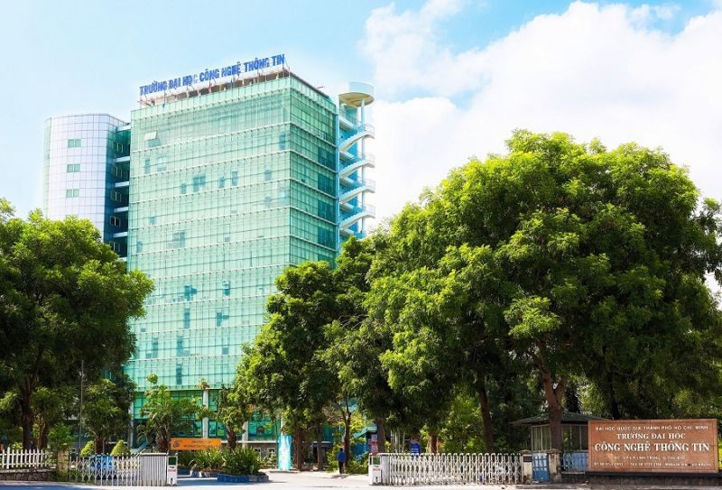
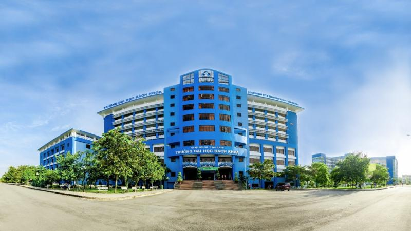
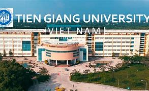
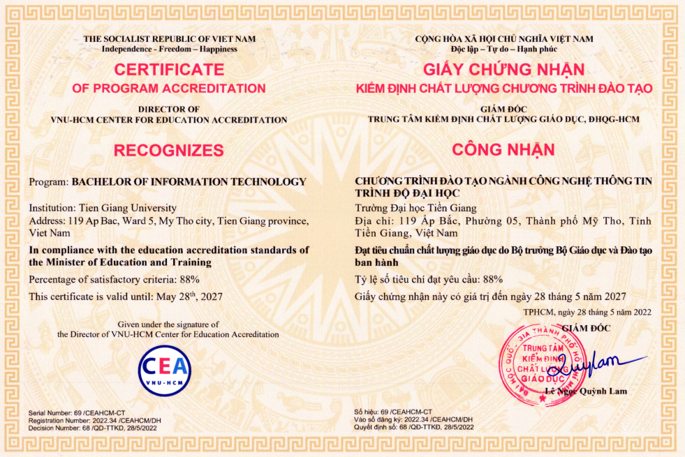
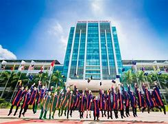
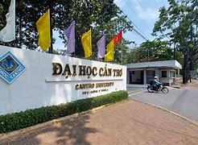
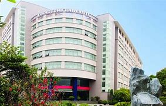
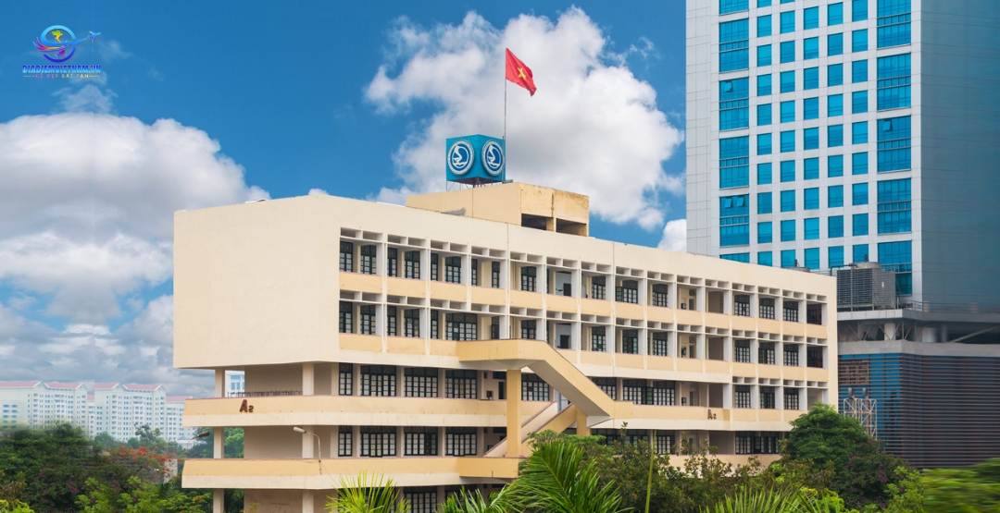

Các Trường Đào Tạo Ngành Công Nghệ Thông Tin Tại Việt Nam
Ngành Công nghệ Thông tin (CNTT) là một trong những ngành học đang phát triển mạnh mẽ tại Việt Nam. Dưới đây là danh sách 10 trường đại học hàng đầu đào tạo ngành CNTT ở Việt Nam.
1. Đại Học Bách Khoa Hà Nội (HUST)
Đại học Bách Khoa Hà Nội là một trong những trường đại học kỹ thuật hàng đầu tại Việt Nam, với chương trình đào tạo CNTT chuyên sâu và chất lượng cao.
Trường Đại học Bách khoa Hà Nội (viết tắt là HUST) là một trong những trường đại học kỹ thuật đa ngành hàng đầu tại Việt Nam và cũng là một trong các trường đại học trọng điểm quốc gia Việt Nam. Đây là một trong 13 thành viên của Hiệp hội các trường đại học kỹ thuật hàng đầu của Châu Á - Thái Bình Dương mang tên AOTULE (Asia-Oceania Top University League on Engineering).
THÔNG TIN LIÊN HỆ:
Địa chỉ: số 1 Đại Cồ Việt, Hai Bà Trưng, Hà Nội
Điện thoại: 024 3869 4242 & 024 3623 1732
Email: hcth@hust.edu.vn
Website: https://hust.edu.vn/
Fanpage: www.facebook.com/dhbkhanoi
2. Trường Đại học Công nghệ Thông tin - Đại học Quốc gia Thành phố Hồ Chí Minh
Trường Đại học Công nghệ Thông tin - Đại học Quốc gia Thành phố Hồ Chí Minh là trường đại học công lập đào tạo về công nghệ thông tin và truyền thông (CNTT&TT) được thành lập theo quyết định số 134/2006/QĐ-TTg ngày 08/06/2006 của Thủ tướng Chính phủ.
Trường Đại học Công nghệ Thông tin có nhiệm vụ đào tạo nguồn nhân lực công nghệ thông tin chất lượng cao, góp phần tích cực vào sự phát triển của nền công nghiệp công nghệ thông tin Việt Nam, đồng thời tiến hành nghiên cứu khoa học và chuyển giao công nghệ thông tin tiên tiến, đặc biệt là hướng vào các ứng dụng nhằm góp phần đẩy mạnh sự nghiệp công nghiệp hóa, hiện đại hóa đất nước.
Trường có 07 chương trình đào tạo đặc biệt (hệ chính quy) các ngành: kỹ sư tài năng ngành An toàn Thông tin, chương trình tiên tiến ngành Hệ thống thông tin, cử nhân tài năng ngành Khoa học máy tính v.v… Ở bậc đào tạo sau đại học có 03 chương trình đào tạo trình độ thạc sĩ (ngành khoa học máy tính, công nghệ thông tin và hệ thống thông tin) và 02 chương trình đào tạo trình độ tiến sĩ (ngành khoa học máy tính và công nghệ thông tin).
THÔNG TIN LIÊN HỆ:
Địa chỉ: Khu phố 6, Phường Linh Trung, TP. Thủ Đức, TP. HCM
Điện thoại: 028 3725 2002
Email: info@uit.edu.vn
Website: https://www.uit.edu.vn
Fanpage: www.facebook.com/UIT.Fanpage
3. Đại Học Bách Khoa TP.HCM (HCMUT)
Đại học Bách Khoa TP.HCM là một trong những trường đại học kỹ thuật hàng đầu tại miền Nam Việt Nam, với chương trình đào tạo CNTT chất lượng.
Mục tiêu của chương trình ngành Công nghệ thông tin là đào tạo ra những sinh viên có kiến thức chuyên sâu để phân tích, thiết kế, xây dựng, phát triển hệ thống công nghệ thông tin, ứng dụng, nghiên cứu và thiết kế, sản xuất sản phẩm, có khả năng phát triển và vận dụng kiến thức khoa học cơ bản, toán học vào thực tiễn của ngành, khả năng lập trình thành thạo và nắm bắt nhanh với các ngôn ngữ, phát triển kiến thức và kỹ năng cần có cho nghề nghiệp tương lai trong ngành Công nghệ Thông tin, cung cấp một môi trường chuẩn bị cho sinh viên có nhiều định hướng nghề nghiệp khác nhau và có khả năng tự học suốt cuộc đời.
Nếu bạn cảm thấy mình thực sự đam mê với ngành công nghệ thông tin thì hãy chọn đại học Bách khoa làm bến đỗ của mình. Trường được trang bị các thiết bị hiện đại phục vụ cho việc học tập và giảng dạy của thầy và trò với 2 phòng thí nghiệm trọng điểm quốc gia, 6 phòng thí nghiệm trọng điểm của ĐHQG TPHCM, 11 xưởng thực tập và phòng thực hành, 9 trung tâm nghiên cứu chuyển giao công nghệ.
THÔNG TIN LIÊN HỆ:
Địa chỉ: 268 Lý Thường Kiệt, Phường 14, Quận 10, TP.HCM
Điện thoại: 028 3864 7256 & 028 3864 5282
Email: qttt@hcmut.edu.vn
Website: https://hcmut.edu.vn
Fanpage:www.facebook.com/truongdhbachkhoa
4. Đại Học FPT
Xuất thân từ tập đoàn FPT – tập đoàn nổi tiếng về CNTT nên Đại học FPT cũng nhanh chóng trở thành cái tên hàng đầu trong lĩnh vực đào tạo CNTT. Nhờ lợi thế hiểu yêu cầu thực tế của doanh nghiệp đối với nhân sự ngành CNTT, ĐH FPT xây dựng một chương trình đào tạo đáp ứng yêu cầu của không chỉ các doanh nghiệp trong nước mà còn làm hài lòng nhiều nhà tuyển dụng quốc tế.
Đại học FPT nổi tiếng với các chương trình đào tạo về CNTT và kỹ năng mềm, giúp sinh viên sẵn sàng cho môi trường làm việc toàn cầu.
Sinh viên của trường được học hoàn toàn bằng giáo trình nhập ngoại và cập nhật theo những xu hướng công nghệ mới nhất như Mobility, Cloud, Trí tuệ Nhân tạo v.v... Sinh viên cũng được đào tạo bài bản về ngoại ngữ với ngôn ngữ bắt buộc là tiếng Anh và tiếng Nhật để có thể làm việc với những thị trường CNTT lớn nhất thế giới hiện nay.
Ngoài ra, ngôi trường này còn nổi bật trong số các trường đào tạo về CNTT nhờ tỉ lệ sinh viên ra trường có việc làm riêng ngành CNTT đạt tới 98% với mức lương khởi điểm trung bình lên tới 8,3 triệu đồng/tháng. Đây là minh chứng rõ ràng về chất lượng đào tạo của ĐH FPT, đồng thời giúp ngôi trường này trở thành cái tên đứng đầu khi lựa chọn trường để học về công nghệ thông tin.
THÔNG TIN LIÊN HỆ:
Địa chỉ:Khu Giáo dục và Đào tạo – Khu Công nghệ cao Hòa Lạc – Km29 Đại lộ Thăng Long, Thạch Thất, Hà Nội - 024 7300 1866
Email: daihocfpt@fpt.edu.vnn
Website: https://daihoc.fpt.edu.vn
Fanpage: www.facebook.com/daihocfpt
5. Trường Đại học Tiền Giang
Chương trình đào tạo (CTĐT) đại học Công nghệ thông tin (CNTT) Trường Đại Học Tiền Giang đào tạo nguồn nhân lực ngành CNTT có kiến thức thực tế vững chắc, kiến thức lý thuyết toàn diện, kiến thức chuyên sâu về ngành CNTT; có kỹ năng nhận thức, phản biện, phân tích, tổng hợp; có kỹ năng thực hành nghề nghiệp, kỹ năng sử dụng ngoại ngữ, kỹ năng thuyết trình và giao tiếp để thực hiện nhiệm vụ phức tạp, khả năng làm việc độc lập và làm việc nhóm; có nhận thức đúng đắn về vai trò của ngành học và vai trò của công dân, có đạo đức nghề nghiệp, có sức khỏe tốt để làm việc; có khả năng truyền đạt kiến thức, khả năng tự đào tạo để nâng cao kiến thức và kỹ năng nghề nghiệp. CTĐT này đã được công nhận đạt kiểm định chất lượng theo Tiêu chuẩn của Bộ Giáo dục và Đào tạo (theo Quyết định 68/QĐ-TTKĐ ngày 28/05/2022 của Trung tâm Kiểm định Chất lượng Giáo dục ĐH Quốc Gia TP. Hồ Chí Minh). Khối lượng kiến thức toàn khóa của CTĐT là 126 tín chỉ và thời gian đào tạo là 4 năm. CTĐT đại học CNTT Trường Đại học Tiền Giang bao gồm các nội dung sau:
- Kiến thức giáo dục đại cương và nhập môn ngành: Giới thiệu về ngành CNTT, nghề CNTT, vai trò và ứng dụng của ngành CNTT trong sự nghiệp công nghiệp hóa, hiện đại hóa đất nước và hội nhập quốc tế.
- Kiến thức cơ sở ngành: Lập trình, Hệ điều hành, Kiến trúc máy tính, Cấu trúc dữ liệu và giải thuật, Cơ sở dữ liệu, Mạng máy tính…
- Thực tập tốt nghiệp và Khóa luận tốt nghiệp: Người học được gửi đến các đơn vị chuyên về CNTT để thực tập tốt nghiệp và làm Khóa luận tốt nghiệp.
Chương Trình Đào Tạo
Chương trình đào tạo ngành CNTT tại TGU được thiết kế nhằm cung cấp cho sinh viên những kiến thức và kỹ năng cần thiết để đáp ứng nhu cầu của thị trường lao động. Chương trình bao gồm các môn học cơ bản và chuyên sâu trong lĩnh vực CNTT, như:
- Kỹ Thuật Phần Mềm:
- Mạng Máy Tính và An Ninh Mạng:
- Hệ Thống Thông Tin:
- Thiết kế website

Hình 1: Giấy chứng nhận đạt kiểm định chất lượng của CTĐT đại học Công nghệ thông tin Trường Đại Học Tiền Giang
Cơ Sở Vật Chất
Cơ sở vật chất của Trường Đại học Tiền Giang phục vụ đào tạo ngành CNTT bao gồm hệ thống thông tin tích hợp, hệ thống mạng và máy chủ, 8 phòng máy tính dùng chung, 4 phòng máy tính chuyên ngành và một phòng máy tính do VNPT-IT tài trợ.
- Phòng Máy Tính: Được trang bị hiện đại, đáp ứng nhu cầu học tập và thực hành của sinh viên.
- Phòng Thí Nghiệm Mạng: Để thực hành cấu hình và quản lý mạng.
- Thư Viện Số: Cung cấp tài liệu học tập và nghiên cứu phong phú về CNTT.

Hình 2: Phòng máy tính phục vụ đào tạo ngành CNTT tại Trường Đại học Tiền Giang.
Hợp Tác và Nghiên Cứu
Ngành CNTT tại TGU cũng có các mối quan hệ hợp tác với nhiều doanh nghiệp, tổ chức và trường đại học khác, tạo điều kiện cho sinh viên tham gia vào các dự án thực tế, thực tập và nghiên cứu khoa học. Điều này không chỉ giúp sinh viên áp dụng kiến thức vào thực tiễn mà còn nâng cao kỹ năng chuyên môn và mở rộng mạng lưới nghề nghiệp.
Hoạt Động Ngoại Khóa
Trường cũng tổ chức nhiều hoạt động ngoại khóa, các cuộc thi lập trình, hội thảo chuyên đề và các câu lạc bộ học thuật liên quan đến CNTT. Những hoạt động này giúp sinh viên phát triển kỹ năng mềm, làm việc nhóm và tăng cường sự sáng tạo.
6.Đại học Sư phạm kỹ thuật TP. HCM
Trường Đại học Sư phạm Kỹ thuật, với chuyên ngành Công nghệ Thông tin, là một trong những cơ sở đào tạo hàng đầu tại Việt Nam trong lĩnh vực giáo dục và công nghệ kỹ thuật. Chuyên ngành Công nghệ Thông tin của trường cung cấp một chương trình học hiện đại và toàn diện, giúp sinh viên nắm vững cả lý thuyết lẫn kỹ năng thực tiễn, từ đó có thể tự tin tham gia vào thị trường lao động cạnh tranh ngày nay.
Cơ Sở Vật Chất và Môi Trường Học Tập
Trường Đại học Sư phạm Kỹ thuật sở hữu hệ thống cơ sở vật chất hiện đại, bao gồm các phòng lab máy tính tiên tiến, thư viện với nguồn tài liệu phong phú, và các phòng học được trang bị đầy đủ thiết bị giảng dạy. Sinh viên có cơ hội tham gia vào các dự án thực tế, các câu lạc bộ học thuật và các hoạt động ngoại khóa phong phú, giúp phát triển kỹ năng mềm và kỹ năng làm việc nhóm.
Cơ Hội Nghề Nghiệp
Sinh viên tốt nghiệp chuyên ngành Công nghệ Thông tin tại Đại học Sư phạm Kỹ thuật có nhiều cơ hội nghề nghiệp rộng mở, bao gồm:
- Lập trình viên: Thiết kế và phát triển phần mềm, ứng dụng.
- Chuyên viên an ninh mạng: Đảm bảo an toàn cho hệ thống mạng của các tổ chức.
- Quản trị hệ thống: Quản lý và bảo trì các hệ thống công nghệ thông tin.
- Phân tích dữ liệu: Xử lý và phân tích dữ liệu để đưa ra các quyết định kinh doanh chiến lược.
- Giảng viên và nhà nghiên cứu: Đào tạo và nghiên cứu trong lĩnh vực công nghệ thông tin.
7. Trường Đại học Cần Thơ
Ngành Công nghệ Thông tin (CNTT) tại Trường Đại học Cần Thơ (CTU) là một trong những ngành học quan trọng và được đầu tư mạnh mẽ, nhằm đáp ứng nhu cầu ngày càng cao về nhân lực trong lĩnh vực công nghệ thông tin của khu vực Đồng bằng sông Cửu Long cũng như toàn quốc.
Chương Trình Đào Tạo
Chương trình đào tạo ngành CNTT tại Đại học Cần Thơ được xây dựng bài bản, kết hợp giữa lý thuyết và thực hành, nhằm trang bị cho sinh viên những kiến thức và kỹ năng cần thiết để đáp ứng yêu cầu của thị trường lao động.
Cơ Sở Vật Chất
Trường Đại học Cần Thơ đầu tư mạnh vào cơ sở vật chất phục vụ ngành CNTT, bao gồm:
- Phòng Thí Nghiệm Máy Tính: Trang bị hiện đại, phục vụ cho việc học tập và nghiên cứu của sinh viên.
- Phòng Thí Nghiệm Mạng và An Ninh Mạng: Để thực hành các kỹ thuật quản trị và bảo mật mạng.
- Thư Viện Kỹ Thuật Số: Cung cấp tài liệu học tập và nghiên cứu phong phú về CNTT.
Đội Ngũ Giảng Viên
Đội ngũ giảng viên ngành CNTT tại Đại học Cần Thơ là những người có trình độ cao, nhiều người trong số đó có bằng cấp từ các trường đại học uy tín ở nước ngoài. Họ không chỉ giỏi về chuyên môn mà còn rất nhiệt tình và tận tâm với công tác giảng dạy và nghiên cứu.
8. Đại Học Duy Tân
Đại học Duy Tân tại Đà Nẵng là trường đại học tư thục có chương trình đào tạo CNTT tiên tiến và hiện đại.
9. Đại Học Thăng Long
Đại học Thăng Long tại Hà Nội cung cấp chương trình đào tạo CNTT với môi trường học tập năng động và hiện đại.
10. Trường Đại học Giao thông Vận tải
Ngành Công nghệ Thông tin (CNTT) tại Trường Đại học Giao thông Vận tải (UTC) là một ngành học được nhiều sinh viên quan tâm và lựa chọn. Trường Đại học Giao thông Vận tải là một trong những cơ sở giáo dục uy tín tại Việt Nam, có bề dày lịch sử và thành tích trong lĩnh vực đào tạo kỹ thuật, trong đó có CNTT.